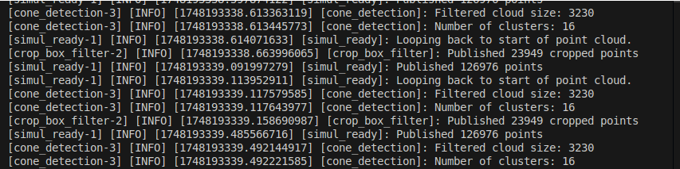
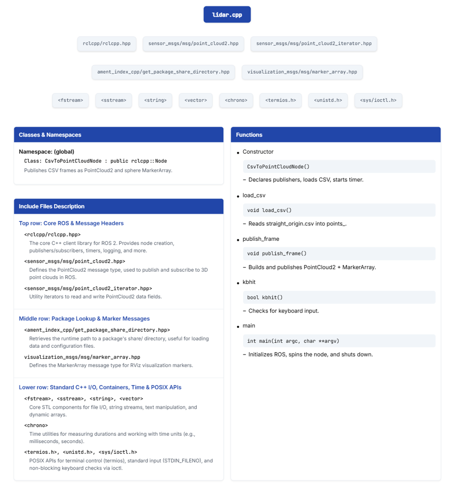
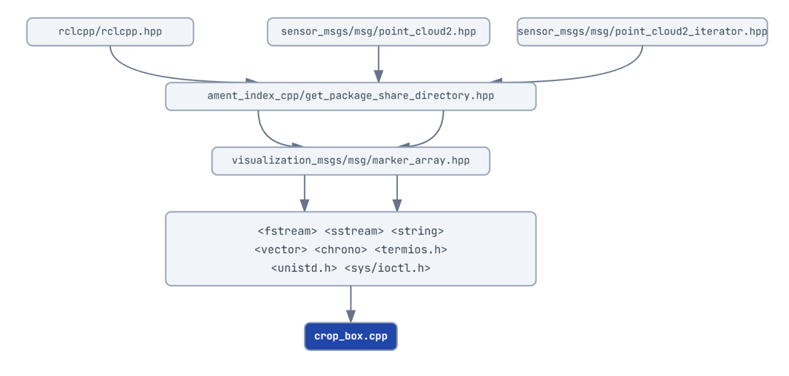
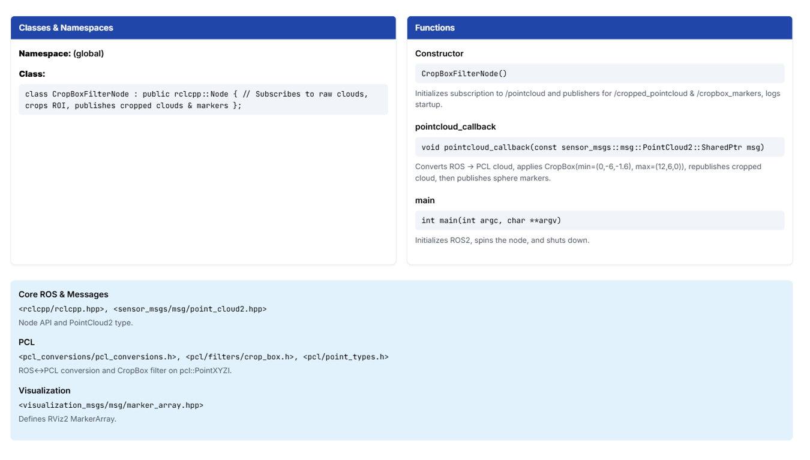
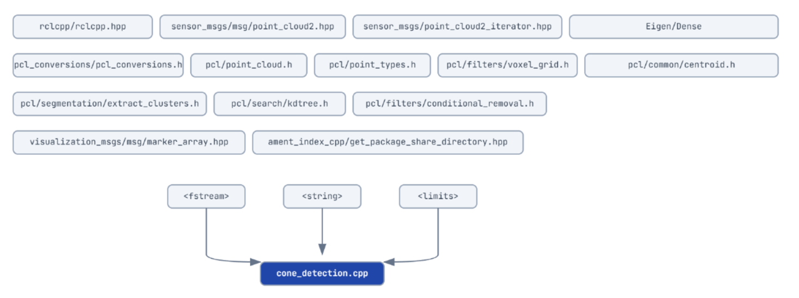
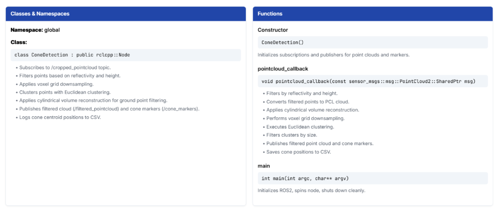
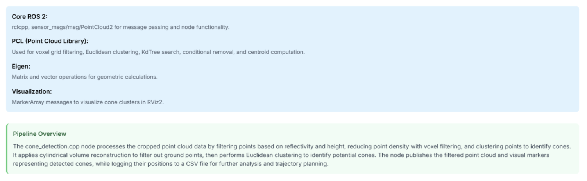
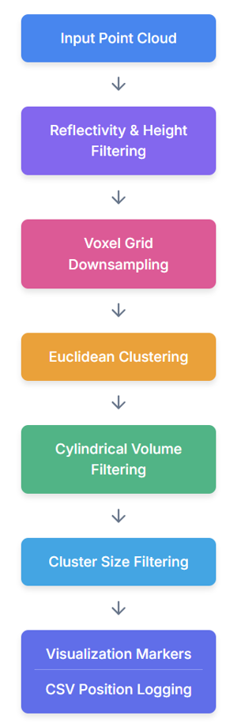
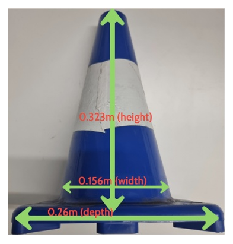

Ouster OS1-128 LiDAR Setup and Tutorial
Environment Setup & Real-Vehicle LiDAR Data Collection
Welcome to the Environment Setup & Data Collection tutorial. By the end of this tutorial, you’ll understand:
How to build and launch both CSV- and PCAP-based ROS 2 pipelines
How to arrange real-vehicle traffic-cone tests (Straight & Curve lanes)
Why and when to choose CSV vs. PCAP + JSON formats
What You’ll Need
WSL (Ubuntu 22.04) in an Oracle VM
ROS 2 Humble
Ouster-SDK (LiDAR drivers)
A test vehicle with LiDAR mount
Setting Up Your Workspace
# Ensure you are in your home directory, clone our repo and enter it
git clone https://github.com/YourOrg/2024_2025_av_sim_stack.git
cd 2024_2025_av_sim_stack
# Ensure Ouster-SDK lives in src/ or{ your project folder name}/
git clone https://github.com/ouster-lidar/ouster-sdk.git src/ouster-sdk
colcon build --symlink-install
source install/setup.bash
Launching the CSV-Based Pipeline/ or PCAP-Based Pipeline
colcon build --packages-select csv_to_pointcloud_node --cmake-clean-cache
colcon build --packages-select lidar_integration --cmake-clean-cache
source install/setup.bash
ros2 launch csv_to_pointcloud_node full_pipeline.launch.py
ros2 launch lidar_integration lidar_pipeline_launch.py
After this, you will see:
{kind=link}
And it will automatically launch Rviz
Inspecting ROS 2 Topics
By the end of this step, you’ll know how to discover active topics and view live message data via the CLI.
What You’ll Need
A running ROS 2 launch (e.g. full_pipeline.launch.py)
Your terminal with source install/setup.bash active
Listing All Topics
ros2 topic list
should output:
/pointcloud
/filtered_pointcloud
/cone_markers
/rosout
...
{kind=link}
This shows every topic currently being published or subscribed.
Viewing Topic Data (“Echo”)
ros2 topic echo <topic_name>
Example:
ros2 topic echo /cone_markers
Filtering Echo Output
First 5 messages only:
ros2 topic echo --once /pointcloud
or to a single field:
ros2 topic echo /pointcloud --field "width"
Try This:
ros2 bag record /cone_positions
Record bag of cone positions for later analysis:
With these commands, you can inspect the flow of data through your pipelines, debug message contents, and verify that each node publishes exactly what you expect.
Collecting Straight & Curve Lane Data - Real-Vehicle Cone Lane Tests
Mount Design: Create or adapt a sturdy custom bracket to secure the Ouster OS-1 to your vehicle’s frame.
Power Supply: Provide a reliable auxiliary battery pack (e.g. 12 V lead-acid or LiPo).
Software Setup: Install and configure Ouster Studio to verify sensor connectivity and adjust scanning parameters before each run.
Procedure: Mount LiDAR → drive through each lane → record both CSV and PCAP + JSON
Data Outputs & Formats
After each run, you will have:
CSV files: processed, downsampled point clouds
PCAP + JSON: raw packet captures with full metadata
These are then fed into C++ detection nodes that cluster, fit, and extract cone centers. The full detection workflow sits under your LiDAR Perception Pipeline tutorial.
CSV vs. PCAP + JSON: Pros & Cons
CSV
+ ✔ Lightweight & easy parse
+ ✔ Fast load times
+ ✔ Ideal for quick prototyping
- ✘ Limited metadata
- ✘ Loses packet-level timing
PCAP + JSON
+ ✔ Raw packets + precise timestamps
+ ✔ Full sensor calibration & metadata
+ ✔ Enables exact sensor replay and advanced debugging
- ✘ Large files → slower load
- ✘ Requires complex PCAP + JSON parsing logic
You’re now ready to build, launch, and collect LiDAR data in both CSV and PCAP + JSON formats.
Tutorial: LiDAR Data Acquisition & Preprocessing
Welcome to the LiDAR Data Acquisition & Preprocessing tutorial. By the end of this tutorial, you’ll understand:
How to physically mount and power the Ouster OS-1 sensor
How to collect both CSV and PCAP + JSON datasets on a moving vehicle
How to preprocess raw outputs to skip invalid points and synchronize frames
What You’ll Need
Test Vehicle & Mounting Hardware
{kind=link}
Power Supply: Auxiliary 24 V battery pack (20 W peak)
Software: Ouster Studio for health checks & parameter tuning
{kind=link}
ROS 2 Humble with lidar_integration (Pcap) and csv_to_pointcloud_node (CSV)
Mounting & Sensor Configuration
Secure the Ouster OS-1 on your vehicle roof
Verify mechanical stability at speeds up to 40 km/h
Connect via gigabit Ethernet and auxiliary power
Launch Ouster Studio to confirm UDP connectivity and set:
Channels: 128
Horizontal resolution: 1024
Frame rate: 10 Hz (or 20 Hz)
Driving Tests & Data Recording
Arrange traffic cones:
Spacing: 5 m between cones
Lane width: 11 m
Perform two runs:
While driving, launch both pipelines to record:
CSV output (pre-processed point clouds)
PCAP + JSON (raw UDP packets + metadata)
{kind=link}
{kind=link}
Preprocessing CSV Data
LiDAR records a distance of 0 for invalid returns, resulting in phantom points at the sensor’s origin.
Transform spherical to Cartesian:
x = ρ · sin φ · cos θ
y = ρ · sin φ · sin θ
z = ρ · cos φ
Where:
ρ (range): radial distance
θ (azimuth): angle in the xy plane
φ (elevation): angle from +z toward xy plane
{kind=link}
Python Snippet:
import pandas as pd
df = pd.read_csv('data/straight or curve.csv')
df = df[df['range'] > 0]
df.to_csv('points_filtered.csv', index=False)
Benefits of removing zero-range points:
Eliminates Origin Spikes
Improves Clustering & Detection
Speeds Up Downstream Processing
Preprocessing PCAP + JSON Data
No explicit “no-return” flag in PCAP packets. To filter:
Skip Initial Frames
Use skip_time parameter:
from launch import LaunchDescription from launch.actions import DeclareLaunchArgument json_path = LaunchConfiguration('json_path') pcap_path = LaunchConfiguration('pcap_path') skip_time = LaunchConfiguration('skip_time')
In lidar_pipeline_launch.py and total_reader.cpp:
double skip_time = this->declare_parameter("skip_time"); if (current_time < skip_time) continue;
Filter by UDP Port
if (pkt_info.dst_port == lidar_port) { LidarPacket pkt(static_cast<int>(pkt_info.packet_size)); std::memcpy(pkt.buf.data(), data, pkt_info.packet_size); }
Benefits:
Lower Parsing Overhead
Improved Detection Reliability
Tutorial: Lidar Perception Pipeline & Preprocessing 2: CSV Reader
Welcome to the detailed File Reference and pipeline overview for our CSV-based perception nodes. By the end of this tutorial, you will have:
A clear visual of the CSV→PointCloud2 processing pipeline
Concise summaries of core functions in the CSV reader node
{kind=link}
Pipeline Stages
CsvToPointCloudNode (lidar.cpp) Publishes raw clouds and sphere markers on /pointcloud (optional /raw_point_markers) after reading X/Y/Z, signal, and reflectivity from CSV.
CropBoxFilterNode (crop_box.cpp) Subscribes to /pointcloud, applies a 3D CropBox, republishes on /cropped_pointcloud, adds markers on /crop_box_markers.
ConeDetection (cone_detection.cpp) Listens on /cropped_pointcloud, downsamples and clusters, then publishes on /filtered_pointcloud and /cone_marker_array. Logs positions to CSV.
PointCloudToMarkers (pointcloud_to_markers.cpp) Converts reflectivity into colored spheres. Subscribes to /filtered_pointcloud or /pointcloud, outputs /visualization_marker_array.
Lidar.cpp Node
{kind=link}
Wall Timer at 10 Hz:
timer_ = this->create_wall_timer(
100ms,
std::bind(&CsvToPointCloudNode::publish_frame, this)
);
This ensures a 10 Hz loop, matching Ouster OS-1 spin rate.
frame_id for 360° Visualization:
sensor_msgs::msg::PointCloud2 msg;
msg.header.frame_id = "lidar_frame";
msg.header.stamp = this->get_clock()->now();
Ensures all points are assigned to the correct coordinate frame in RViz2.
Batch Size = 1024 × 128:
size_t batch_size = 1024 * 128;
size_t end_index = std::min(current_index_ + batch_size, points_.size());
auto frame = vector<PointXYZIR>(
points_.begin() + current_index_,
points_.begin() + end_index
);
current_index_ = end_index;
This reflects Ouster OS-1 resolution: 1024 azimuth steps × 128 channels = 131,072 points.
Defining the Crop-Box Region of Interest
 {kind=link}
{kind=link}
In our pointcloud_callback(), we use a 3D axis-aligned box to trim away everything outside the area where cones will appear. Mathematically, we want to keep only those points satisfying:
x_min ≤ x ≤ x_max
y_min ≤ y ≤ y_max
z_min ≤ z ≤ z_max
For our FSAE track setup, we chose:
Eigen::Vector4f min_point(4.0f, -6.0f, -1.6f, 1.0f);
Eigen::Vector4f max_point(12.0f, 6.0f, 0.0f, 1.0f);
This box covers an 8 m (from 4 m to 12 m ahead of the vehicle), 12 m wide, 1.6 m tall swath in front of the vehicle.
In visualization, Rviz2 renders our defined crop-box as a translucent prism surrounding the region of interest in front of the vehicle as well as ground removal from top down 1.6m. This “virtual fencing” makes it easy to see which points are being retained and which are discarded before cone detection begins.
// Create the CropBox filter
pcl::CropBox<pcl::PointXYZI> crop;
crop.setInputCloud(cloud);
crop.setMin(min_point);
crop.setMax(max_point);
// Allocate output and run the filter
pcl::PointCloud<pcl::PointXYZI>::Ptr cropped(new pcl::PointCloud<pcl::PointXYZI>);
crop.filter(*cropped);
Points satisfying all six constraints remain in the resulting cropped cloud. By casting the box this way, we efficiently remove unwanted background and ground returns, leaving only the in-front section where traffic cones lie.
Cone Detection Pipeline Overview
  {kind=link}
{kind=link}
{kind=link}
The cone_detection.cpp is a key component of our perception integration system.
Our cone detection pipeline takes in a cropped point cloud and processes it through several stages to reliably identify traffic cones:
{kind=link}
Reflectivity and Height Filtering
Although the input point cloud is already cropped by the crop_box node, further refinement is performed through clustering based on height z and intensity (reflectivity).
The reflectivity value reflects the intensity of the laser return, which helps differentiate cones from other objects. For instance, low-reflectivity objects like the ground or trees can cause noise during driving.
Since cones have highly reflective tape, their reflectivity typically exceeds a threshold of 25.
while (iter_x != iter_x.end()) {
if (*iter_reflectivity > 25.0f && *iter_z > -1.59f) {
filtered_points.push_back({*iter_x, *iter_y, *iter_z, *iter_reflectivity});
}
++iter_x; ++iter_y; ++iter_z; ++iter_reflectivity;
}
Filtering condition: Reflectivity > 25.0, z > −1.59m.
{kind=link}
Voxel Grid Downsampling
To reduce computational load and remove redundant points, Voxel Grid Downsampling is applied.
This partitions the point cloud into a 3D grid of voxels (small cubes), replacing all points inside each voxel with a representative point (typically the centroid).
Voxel size used: 0.03 meters (x, y, z). This balances preserving detail and improving speed.
Voxel filtering is performed after initial reflectivity and height filtering, and before clustering.
Euclidean Clustering
A Kd-Tree-based Euclidean clustering groups points based on their Euclidean distance.
pcl::EuclideanClusterExtraction<pcl::PointXYZ> ec;
ec.setClusterTolerance(0.1); // Max distance between points (meters)
ec.setMinClusterSize(5); // Ignore clusters smaller than 5
ec.setMaxClusterSize(300); // Ignore clusters larger than 300
ec.setSearchMethod(tree);
ec.setInputCloud(cloud_filtered);
ec.extract(cluster_indices);
d_tol = 0.1 m
Min cluster size = 5 points
Max cluster size = 300 points
Small clusters are likely noise. Large clusters are likely non-cone objects.
Cylindrical Volume Reconstruction
Some cone points may be mistakenly removed as ground. This step recovers them using a cylindrical volume centered on the XY-projected cluster centroid.
Eigen::Matrix3f cylinderMatrix = Eigen::Matrix3f::Zero();
cylinderMatrix(0,0) = 1.0f;
cylinderMatrix(1,1) = 1.0f;
Eigen::Vector3f cylinderV;
cylinderV << -centre.x, -centre.y, 0.0f;
float radius = 0.5f;
float cylinderScalar = centre.x * centre.x + centre.y * centre.y - (radius * radius);
pcl::TfQuadraticXYZComparison<pcl::PointXYZ>::Ptr cyl_comp(
new pcl::TfQuadraticXYZComparison<pcl::PointXYZ>(
pcl::ComparisonOps::LE, cylinderMatrix, cylinderV, cylinderScalar));
pcl::ConditionAnd<pcl::PointXYZ>::Ptr cyl_cond(new pcl::ConditionAnd<pcl::PointXYZ>());
cyl_cond->addComparison(cyl_comp);
pcl::PointCloud<pcl::PointXYZ> recovered;
pcl::ConditionalRemoval<pcl::PointXYZ> condrem(true);
condrem.setCondition(cyl_cond);
condrem.setInputCloud(cloud_cluster);
condrem.setKeepOrganized(false);
condrem.filter(recovered);
This filter retains points inside the cylindrical volume.
Cluster Geometric Size Filtering
Real-world cone dimensions:
Height: 0.323 m
Base diameter: 0.156 m
Base width (square): 0.26 m
Filtering constraints:
Height: 0.1 m – 0.45 m
Width: 0.1 m – 0.25 m
Depth: 0.1 m – 0.35 m
if (height < 0.1 || height > 0.45) continue;
if (width < 0.1 || width > 0.25) continue;
if (depth < 0.1 || depth > 0.35) continue;
Clusters not meeting these constraints are excluded.
{kind=link}
Publishing Results
marker_pub_->publish(marker_array);
std::string csv_path = ament_index_cpp::get_package_share_directory("csv_to_pointcloud_node") + "/data/cone_paths.csv";
std::ofstream outfile(csv_path);
outfile << "x,y,label\n";
for (const auto& [x, y] : cluster_xy_centers) {
std::string label = (y > 0) ? "right" : "left";
outfile << x << "," << y << "," << label << "\n";
}
outfile.close();
Filtered clouds and cluster markers are published. Centroid positions are saved to CSV for future use.
Running the Full Pipeline
ros2 launch csv_to_pointcloud_node full_pipeline.launch.py
This command starts all nodes including CSV reading, cropping, cone detection, and visualization.
Visualization of Detected Cones
Detected cones are shown as spherical markers in RViz2, clearly highlighting their positions.
Example Output Log:
[INFO] Filtered cloud size: XXX
[INFO] Detected cone clusters: YYY